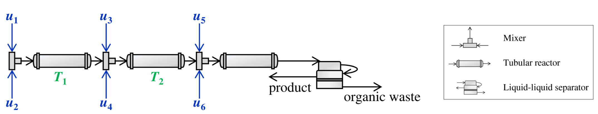
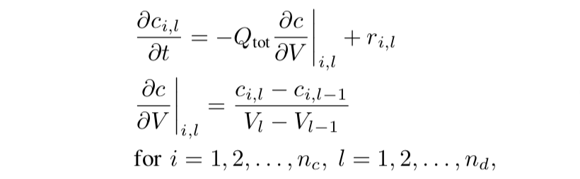
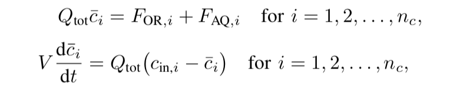
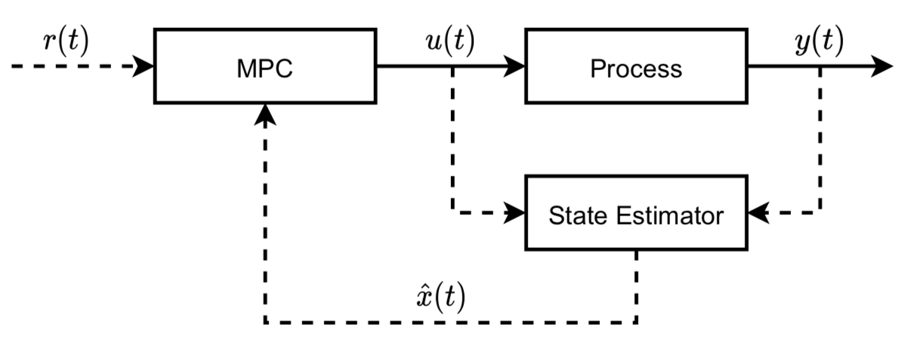
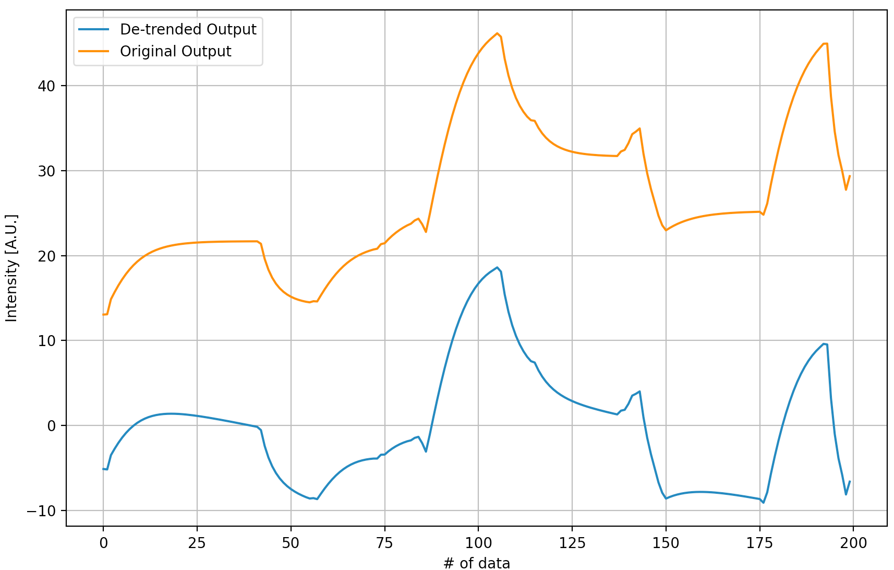
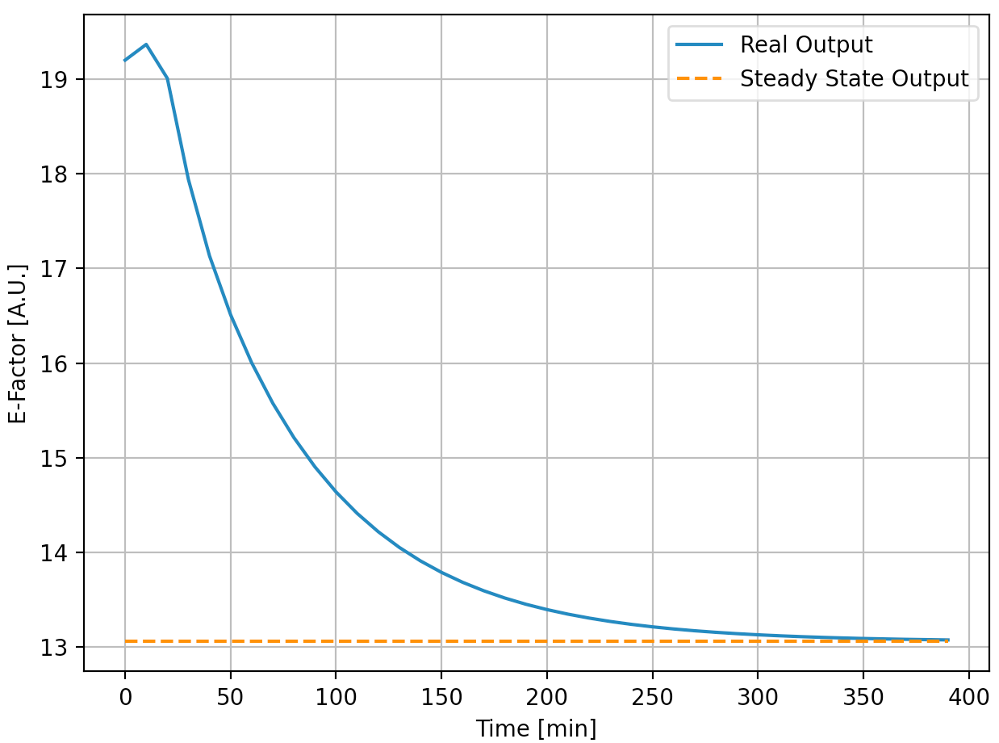
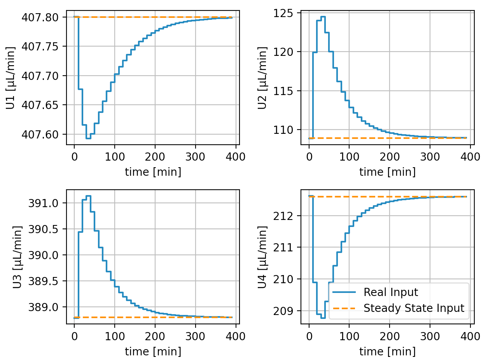

AtropineEnv
Introduction
What is atropine? We can simply treat it as one medication that benefits human beings. A corresponding continuous production flow can be described as below:
The whole flow contains six stream inputs, two outputs (product and waste stream), three mixers, three tubular reactors, and one liquid-liquid separator. They are connected sequentially and the flow directions can be shown as those arrows. Besides, in our project, the flow rates of NO. 5 and 6 are kept constant.
Atropine Model
Here comes the 1st challenge, how to model the whole flow? Since the flow has duplicate components, like input streams, mixers, and tubular reactors, we can develop single Stream, Mixer, TubularReactor, LLSeparator and Plant python classes and reuse them. They are based on this paper. Let us go through each of them.
Stream
For each input stream, it has 14 reactants. This model is simple and no differential equations are included. It just helps calculate the related mass flow rates, molar concentrations, and mass concentrations based on the input volumetric flow rates.
Mixer
It is supposed that all the reactants are fully and intensively mixed and no reaction happened (no new species generated). By following a basic mass conservation equation, the Mixer model can be built.
TubularReactor
This model becomes complex because the partial differential equations (PDEs) are included. The partial derivative of the molar concentration of each species w.r.t time is modeled.
where \(c_{i,l}\) is the molar concentration of species i at discretization point l; V is the reactor volume; \(Q_{tot}\) is the total volumetric flow rate; \(r_{i,l}\) is the reaction rate matrix. This model is time-consuming because it has a double for-loop that not only iterates all discretized points (\(n_{d}\) =40) but also iterates all 14 species.
LLSeparator
This part is also based on the mass conservation equation but the differential-algebraic equations (DAEs) are introduced.
where \(F_{OR,i}\) and \(F_{AQ,i}\) are the molar flow rates of species i at the organic and aqueous phases, respectively. Also, \(F_{OR,i}\) and \(F_{AQ,i}\) are algebraic variables. Hence, the derivatives can be calculated based on the above equation, so as the algebraic.
Plant
Now, let us assemble the above components together and get the whole continuous flow. They are connected like Plant and are exactly following the design in Fig. 1. The updated states are based on the derivatives of the three tubular reactors and one liquid-liquid separator, and the algebraic of the liquid-liquid separator. Additionally, we have an extra step that takes the mixing process into consideration right before calculating the updated state by CASADI. In a nutshell, the Stream and Mixer help us preprocess the data, and the TubularReactor and LLSeparator provide the derivative and the algebraic for updating states.
Control System
System Design
So far, we have a model that represents the whole flow and it is an open-loop one. The next step is to design a linear MPC-based control system to track the steady-state inputs and output ASAP. First of all, let us design the overall control system as below:
where the Process refers to our plant model and State Estimator refers to a Kalman filter that is used for states estimation; \(r(t)\) is the reference signal; \(u(t)\) is the inputs for the plant model and the Kalman filter; \(y(t)\) is the output; \(x(t)\) is the states and \(\hat{x}(t)\) is the estimation. The above linear system can be described below:
x(k+1) = Ax(k) + Bu(k)
y(k) = Cx(k) + Du(k)
kalman filter progresses like:
e(k) = y(k) - yhat(k)
xhat(k+1) = Axhat(k) + Bu(k) - Ke(K)
where e is the error.
System Identification
In order to get the above matrics A, B, C, D, and K, we can take advantage of a system identification package SIPPY. And training data can be generated by the open-loop model for the identification process.
With respect to the open-loop model , it has four inputs (volumetric flow rates u1, u2, u3, and u4 in Fig. 1) and one output (e-factor) that describes atropine production efficiency.
The input data of the open-loop model can be acquired by random noise and the corresponding e-factor can be calculated based on the algebraic (less than 0.1s per run). For our case, it seems only 200 rows of data is enough for linear model identification.
Similar to the ML model training, a training and testing data split method was applied. However, the linear trend of the output data requires to be removed and the processed output signal is shown below.
System identification is pretty simple and we chose an identification method of N4SID and an order of 2. Also, a performance metric is designed. Finally, after the system identification, we have the following system:
System Implementation
We generated below the trajectory with MPC, and ended the simulation once it reaches the steady state (we considered this as a termination condition) The whole simulation represents 400 minutes in real life and the results are shown below:
 It can be seen that the control system successfully worked and both the inputs and the output reach the steady-state. The whole process (data generation, system identification, and MPC control) takes less than 10 seconds.
AtropineEnv module
Following the discription above, we provide APIs as below:
AtropineEnv simulates an atropine production environment.
- class smpl.envs.atropineenv.AtropineEnvGym(dense_reward=True, normalize=True, debug_mode=False, action_dim=4, reward_function=None, done_calculator=None, observation_name=None, action_name=None, np_dtype=<class 'numpy.float32'>, max_steps=60, error_reward=-100000.0, x0_loc='https://raw.githubusercontent.com/smpl-env/smpl/main/smpl/configdata/atropineenv/x0.txt', z0_loc='https://raw.githubusercontent.com/smpl-env/smpl/main/smpl/configdata/atropineenv/z0.txt', model_loc='https://github.com/smpl-env/smpl-experiments/blob/main/configdata/atropineenv/model.npy?raw=true', uss_subtracted=True, reward_on_ess_subtracted=False, reward_on_steady=True, reward_on_absolute_efactor=False, reward_on_actions_penalty=0.0, reward_on_reject_actions=True, reward_scaler=1.0, relaxed_max_min_actions=False, observation_include_t=True, observation_include_action=False, observation_include_uss=True, observation_include_ess=True, observation_include_e=True, observation_include_kf=True, observation_include_z=True, observation_include_x=False)[source]
Bases:
smpl.envs.utils.smplEnvBase- done_calculator_standard(current_observation, step_count, reward, done=None, done_info=None)[source]
- check whether the current episode is considered finished.
returns a boolean value indicated done or not, and a dictionary with information. here in done_calculator_standard, done_info looks like {“terminal”: boolean, “timeout”: boolean}, where “timeout” is true when episode end due to reaching the maximum episode length, “terminal” is true when “timeout” or episode end due to termination conditions such as env error encountered. (basically done)
- Parameters
- Returns
done and done_info.
- Return type
- evaluate_rewards_mean_std_over_episodes(algorithms, num_episodes=1, error_reward=None, initial_states=None, to_plt=True, plot_dir='./plt_results', computer_on_episodes=False)[source]
returns: mean and std of rewards over all episodes. since the rewards_list is not aligned (e.g. some trajectories are shorter than the others), so we cannot directly convert it to numpy array. we have to convert and unwrap the nested list. if computer_on_episodes, we first average the rewards_list over episodes, then compute the mean and std. else, we directly compute the mean and std for each step.
- evalute_algorithms(algorithms, num_episodes=1, error_reward=None, initial_states=None, to_plt=True, plot_dir='./plt_results')[source]
when excecuting evalute_algorithms, the self.normalize should be False. algorithms: list of (algorithm, algorithm_name, normalize). algorithm has to have a method predict(observation) -> action: np.ndarray. num_episodes: number of episodes to run error_reward: overwrite self.error_reward initial_states: None, location of numpy file of initial states or a (numpy) list of initial states to_plt: whether generates plot or not plot_dir: None or directory to save plots returns: list of average_rewards over each episode and num of episodes
- plot(show=False, efactor_fig_name=None, input_fig_name=None)[source]
- reset(initial_state=None, normalize=None)[source]
Required by gym, this function resets the environment and returns an initial observation.
- reward_function_standard(previous_observation, action, current_observation, reward=None)[source]
the s, a, r, s, a calculation.
- Parameters
previous_observation ([np.ndarray]) – This is denormalized observation, as usual.
action ([np.ndarray]) – This is denormalized action, as usual.
current_observation ([np.ndarray]) – This is denormalized observation, as usual.
reward ([float]) – If reward is provided, directly return the reward.
- Returns
reward.
- Return type
[float]
- sample_initial_state(no_sample=False, lower_bound=0.99, upper_bound=1.01)[source]
- step(action, normalize=None)[source]
Required by gym, his function performs one step within the environment and returns the observation, the reward, whether the episode is finished and debug information, if any.
- class smpl.envs.atropineenv.AtropineMPC(model_loc='https://github.com/smpl-env/smpl-experiments/blob/main/configdata/atropineenv/model.npy?raw=true', N=30, Nx=2, Nu=4, uss_subtracted=True, reward_on_ess_subtracted=False, reward_on_steady=True, reward_on_absolute_efactor=False, reward_on_actions_penalty=0.0, reward_on_reject_actions=True, relaxed_max_min_actions=False, observation_include_t=True, observation_include_action=False, observation_include_uss=True, observation_include_ess=True, observation_include_e=True, observation_include_kf=True, observation_include_z=True, observation_include_x=False)[source]
Bases:
object- predict(state)[source]